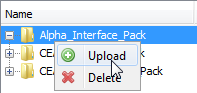

Manage Test Resources window
The Manage Test Resources windows is used when users want to perform tests in the PowerCurve studio before proceeding with deployment of the runtime artefacts.
The utility is helpful when users test Enrichment Access Strategies and Business Process Flows as it allows users to:
- upload parsed bureau data which can then be used to test Enrichment Access Strategies or Business Process Flows.
- upload previously deployed Decision Agent Strategies and Enrichment Access Strategies that will be used in the testing of a complete Business process flow.
{kind=link}
The Manage Test Resources window toolbar allows the user to determine which files are available for use by the Test Project from within each tab.
{kind=link}
Refresh List - ensures that the list of files displayed in the window is up to date
{kind=link}
Upload file - select to upload a deployed strategy to the Job Server
{kind=link}
Remove file - select to remove a deployed strategy from the Job Server and from the Manage Test Resources window
{kind=link}
Add new folder - only used in the External Data Sources tab to create new folders that can hold bureau data
{kind=link}
|
When uploading files that are larger than 100MB, users should increase the memory limit for the Design Studio and the Job Server to ensure that the java heap space limit is not exceeded. For more information, refer to the Optimising the Java Heap Size in the Design Environment topic found in the Decision Analytics Servers Advanced Technical Guide. |
The Manage Test Resources window is made up of:
The Decision Agent Strategies tab allows the user to upload to the Job Server the deployed Decision Agent Strategies (.ser files) that are required for testing. The tab is made up of three columns that provide details of the deployed Decision Process Flows that have been uploaded:
- File Name - the name of the deployed Decision Agent Strategy, (.ser file).
- Alias - the eight character short name for the deployed Decision Process Flow. The alias is used by the Test Project to tell the Decision Agent which Decision Process Flow to execute.
- Edition Number - each time a Decision Process Flow is deployed, the next edition number is automatically assigned. The number displayed in this column ensures that the correct version of the Decision Process Flow is included in the test.
- Creation Date - the date that the deployment was made.
- Upload Date - the date that the .ser file was uploaded to the Job Server using the using the Upload file functionality of the Manage Test Resources window.
- Notes - optional area where the user can add additional information about the uploaded Decision Agent Strategy
| The Manage Test Resource window will only allow deployed Decision Process Flows (.ser files) to be uploaded to the Decision Agent Strategies tab. |
The Enrichment Access Strategies tab allows the user to upload to the Job Server, the deployed Enrichment Access Strategies (.ser files) that are required for testing. The tab is made up of four columns which provide details of the deployed Enrichment Access Strategies that have been uploaded:
- File Name - the name of the deployed Enrichment Access Strategy, (.ser file).
- Access Strategy ID - the name of the deployed Enrichment Access Strategy that is used by the Test Project to tell the Enrichment Agent which Enrichment Access Strategy to execute.
- Version - the version of the deployed Enrichment Access Strategy.
- Deployment Date - the date that the deployment was made.
- Upload Date - the date that the .ser file was uploaded to the Job Server using the using the Upload file functionality of the Manage Test Resources window.
- Associated External Data Sources (Count) - the number of External Data Sources used the by the uploaded Enrichment Access Strategy.
- Notes - optional area where the user can add additional information about the uploaded Enrichment Access Strategy
| The Manage Test Resource window will only allow deployed Enrichment Access Strategies (.ser files) to be uploaded to the Enrichment Access Strategies tab. |
The External Data Source tab allows the user to upload parsed bureau data files (.xml files). The files need to be uploaded into the relevant folder corresponding to each external data source (bureau).
| An .xml file containing parsed data in the correct structure can be generated using the Enrichment Tools. The XML Input Generator Tool uses a deployed Enrichment Access Strategy and the XML Input Constructor Tool uses actual parsed data extracted from the BPS database table to generate the .xml file. |
The folder name matches the Interface Pack ID for each external data source. When users upload strategies via the Enrichment Access Strategy tab, the system automatically creates folders for every bureau used by the uploaded strategy.
Users can also create external data source folders by selecting the Add new folder icon from the toolbar.
| The folder name should match the Interface Pack ID for every external data source. |
The tab is made up of three columns:
- Name - name of the external data source folder or the parsed bureau data file (.xml file)
- Upload Date - the date that the .xml file was uploaded to the Job Server using the Upload file functionality of the Manage Test Resources window.
- Associated External Data Sources (Count) - the number of Enrichment Access Strategies that are using this external data source (Interface Pack).
| External Data Source folders can be removed only if there are no Enrichment Access Strategies using them. |
The Manage Test Resources windows is used when users want to perform tests in the PowerCurve studio before proceeding with deployment of the runtime artifacts.
The utility is helpful when users test Enrichment Access Strategies and Business Process Flows as it allows users to:
- upload parsed bureau data which can then be used to test Enrichment Access Strategies or Business Process Flows.
- upload previously deployed Decision Agent Strategies and Enrichment Access Strategies that will be used in the testing of a complete Business process flow.
To upload files to the Job Server
- Ensure that the Job Server is running.
- In the Studio from the Window menu select Manage Test Resources.
The Manage Test Resources window will open.
To upload Decision Agent Strategies (.ser files)
- With the Manage Test Resources window open, select the Decision Agent Strategies tab.
- Click the Upload File icon and within the Upload File dialog select the deployed Decision Agent Strategies (.ser file) required for the test.
- Double click in the Notes column to add any additional information for the deployed Decision Agent Strategy you have added.
The software will automatically retrieve information about the strategy alias name, version and deployment date. - Repeat steps 2 and 3 as required to upload all the deployed Decision Process Flows required for your test.
| If the .ser file that is attached is not a valid Decision Agent Strategy then an error message will be displayed and the strategy will not be uploaded. |
To upload the Enrichment Access Strategies (.ser files)
- With the Manage Test Resources window open, select the Enrichment Access Strategies tab.
- Click the Upload File icon and within the Upload File dialog select the deployed Enrichment Access Strategy (.ser file) you require for the test.
The software will automatically retrieve information about the strategy ID, edition number and creation date.
The software will calculate how many External Data Sources are used by the uploaded Enrichment Access Strategy and populate the Associated External Data Sources (Count) with this number. - Double click in the Notes column to add any additional information for the deployed Enrichment Access Strategies you have added.
- Repeat step 3 and 4 as required to upload all the deployed Enrichment Access Strategies required by your test.
To upload the bureau data (.xml files)
- With the Manage Test Resources window open, select the External Data Sources tab.
The tab will open and display a folder for each Interface Pack that exists in the uploaded Enrichment Access Strategy. - Select the folder for which bureau data has been created and select Upload File.

The Upload file dialog will open and list any Experian format .xml files. - Select the .xml that contains the parsed bureau data for the selected external data source.
- Repeat steps 2 to 3 to upload all the required .xml files to test the different scenarios that can be performed by the Enrichment Access Strategy.
- Repeat steps 2 to 4 to upload all the required .xml files for each folder.
{kind=link}
| If the .ser file that is attached is not a valid Enrichment Access Strategy then an error message will be displayed and the strategy will not be uploaded. |
To create an External Data Source folder
- With the Manage Test Resources window open and the External Data Source tab selected, click the Add new folder icon .
The system will display the Create an External Data source folder dialog. - Enter a name for the folder in the Create an External Data source folder dialog and click OK.
The dialog will close and the folder will be added to the list and the Associated Enrichment Access Strategies (Count) will be set to 0. - To remove the folder
-
The Manage Test Resources window is made up of three tabs:
The Test Resources are now ready to be used in the Test Project as required.
Files that have been previously uploaded to the Manage Test Resources window can be removed from the Job Server.
To delete a file
- The Manage Test Resources window needs to be open.
- Select the specific tab that contains the file that needs to be removed.
- Highlight the required file.
- Click on the Delete File icon.
A confirmation message will be displayed. - Click Yes.
The file will be removed from both the Manage Test Resources window and Job Server.
The Test Resources are now ready to be used in the Test Project as required.